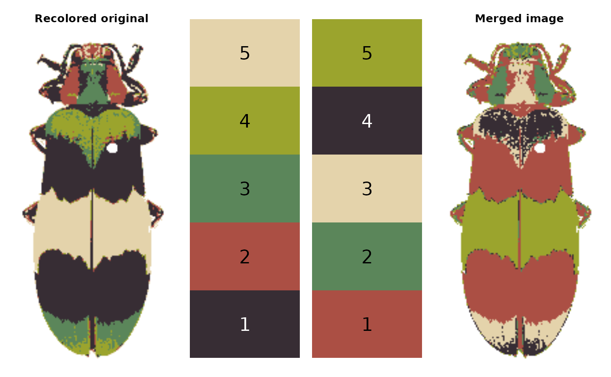
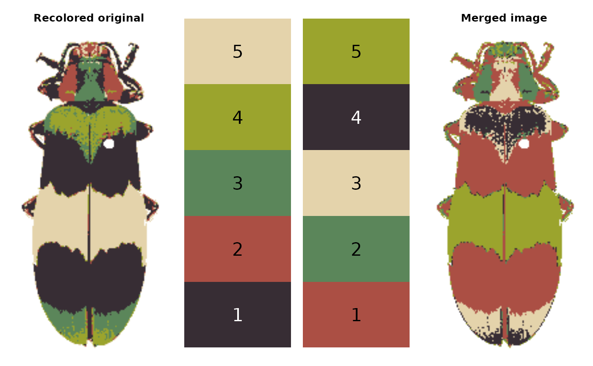

Merge layers in a recolorized image
mergeLayers.RdMerges specified layers in a recolorized image. This is a good option if you
want to manually specify which layers to merge (and what color to make the
resulting merged layer); it's also called on by other recolorize functions
like recluster to merge layers that have been identified
as highly similar in color using a given distance metric.
mergeLayers(
recolorize_obj,
merge_list = NULL,
color_to = "weighted average",
plotting = TRUE
)Arguments
- recolorize_obj
An object of class "recolorize", such as from
recolorize,recluster, orimposeColors.- merge_list
A list of numeric vectors specifying which layers to merge. Layers not included in this list are unchanged. See examples.
- color_to
Color(s) for the merged layers. See examples.
- plotting
Logical. Plot the results of the layer merging next to the original color fit for comparison?
Value
A recolorize class object with merged layers. The order of the returned
layers depends on merge_list: the first layers will be any not included
in the list, followed by the new merged layers. If you start with layers
1-8 and merge layers 4 & 5 and 7 & 8, the returned 5 layers will be, in
order and in terms of the original layers: 1, 2, 3, 6, 4 & 5 (merged), 7 & 8
(merged). This is probably easiest to see in the examples.
Details
Colors can be supplied as numeric RGB triplets (e.g. c(1, 1, 1) for
white), a valid R color name ("white"), or a hex code ("#FFFFFF).
Alternatively, color_to = "weighted average" will set the merged layer to
the average color of the layers being merged, weighted by their relative
size. Must be either a single value or a vector the same length as
merge_list. If a single color is supplied, then all merged layers
will be set to that color (so this really is only useful if you're
already merging those layers into a single layer).
Examples
# image path:
img <- system.file("extdata/corbetti.png", package = "recolorize")
# initial fit, 8 bins:
init_fit <- recolorize(img)
#>
#> Using 2^3 = 8 total bins
 # redundant green, red, and blue clusters
# to make it easier to see, we can plot the numbered palette:
plot(init_fit)
# based on visual inspection, we should merge:
mlist <- list(c(3, 5),
c(4, 7),
c(6, 8))
# we can merge with that list, leaving layers 1 & 2 intact:
vis_merge <- mergeLayers(init_fit,
merge_list = mlist)
# redundant green, red, and blue clusters
# to make it easier to see, we can plot the numbered palette:
plot(init_fit)
# based on visual inspection, we should merge:
mlist <- list(c(3, 5),
c(4, 7),
c(6, 8))
# we can merge with that list, leaving layers 1 & 2 intact:
vis_merge <- mergeLayers(init_fit,
merge_list = mlist)
 # we can include layers 1 & 2 as their own list elements,
# leaving them intact (result is identical to above):
mlist2 <- list(1, 2,
c(3, 5),
c(4, 7),
c(6, 8))
redundant_merge <- mergeLayers(init_fit,
merge_list = mlist2)
# we can also swap layer order this way without actually merging layers:
swap_list <- list(2, 5, 3, 4, 1)
swap_layers <- mergeLayers(redundant_merge,
merge_list = swap_list)
# we can include layers 1 & 2 as their own list elements,
# leaving them intact (result is identical to above):
mlist2 <- list(1, 2,
c(3, 5),
c(4, 7),
c(6, 8))
redundant_merge <- mergeLayers(init_fit,
merge_list = mlist2)
# we can also swap layer order this way without actually merging layers:
swap_list <- list(2, 5, 3, 4, 1)
swap_layers <- mergeLayers(redundant_merge,
merge_list = swap_list)
 # merging everything but the first layer into a single layer,
# and making that merged layer orange (result looks
# a bit like a milkweed bug):
milkweed_impostor <- mergeLayers(init_fit,
merge_list = list(c(2:8)),
color_to = "orange")
# merging everything but the first layer into a single layer,
# and making that merged layer orange (result looks
# a bit like a milkweed bug):
milkweed_impostor <- mergeLayers(init_fit,
merge_list = list(c(2:8)),
color_to = "orange")
 # we can also shuffle all the layer colors while
# leaving their geometry intact:
centers <- vis_merge$centers
centers <- centers[sample(1:nrow(centers), nrow(centers)), ]
shuffle_layers <- mergeLayers(vis_merge,
merge_list = as.list(1:5),
color_to = centers)

# (this is not really the intended purpose of this function)
# we can also shuffle all the layer colors while
# leaving their geometry intact:
centers <- vis_merge$centers
centers <- centers[sample(1:nrow(centers), nrow(centers)), ]
shuffle_layers <- mergeLayers(vis_merge,
merge_list = as.list(1:5),
color_to = centers)

# (this is not really the intended purpose of this function)